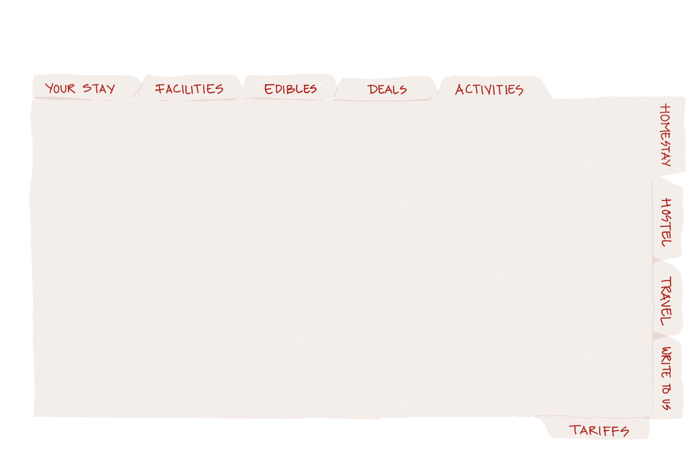
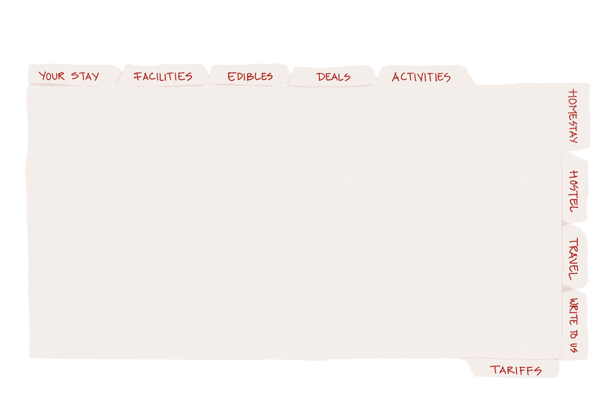

TOUR BRIEF: This wilderness trail skirts the hi-altitude Hemis National Park with its
abundance of wild life and heads through far flung villages with lush green fields of
barley and potato the chief crops in the region. These tiny oasis appear as
welcome sights as you traverse an otherwise stark barren landscape. Far to the
northwest extend excellent views of the mighty Karakorum mountain ranges
DAY 01: ARRIVAL IN DELHI
DAY 02: FLY TO LEH
DAY 03: LEH - SPITUK - ZINCHEN (3200 M)
DAY 04: ZINCHEN -YURUTSE (3844 M)
DAY 05: YURUTSE - GANDA LA (4900 M) - SKIU (3510 M)
DAY 06: SKIU - MARKHA (3850 M)
DAY 07: MARKHA - HANKAR (4000 M)
DAY 08: HANKAR - NIMALING (4650 M)
DAY 09: NIMALING - KONGMARU LA (5150 M) - SHANG SUMDO (3750 M)
DAY 10: SHANG SUMDO - HEMIS - MATHO (3600 m) in 3/4 h
DAY 11: MATHO FARM DAY AND MONASTERY VISIT
DAY 12: LEH - DELHI
DETAILED PROGRAM:
DAY 01: ARRIVAL IN DELHI:Our representatives will receive the guests at Delhi
international airport and transfer to hotel. Later visit to historical monuments in
Delhi.
DAY 02: FLY TO LEH:Take a morning flight to Leh and rest to acclimatise
for the day in the hotel. Later in the evening visit Shanti stupa and Samkar
Monastery.
DAY 03: LEH - SPITUK - ZINCHEN (3200M):We drive 10 km to Spituk from
where we start our trek. We cross Indus River and enter in the Valley of Zinchen
River. Near the village in the Valley we will have our first camp after 4hr walk.
DAY 04: ZINCHEN -YURUTSE (3844M):After by passing this beautiful stopping
Valley, we ascent up to 4900 m by very steep zigzag, difficult footpath, by now it is
3 h. Now steep descent to summer pastures of Stok and follow the River which
comes from Stok - Kangri massif.
DAY 05: YURUTSE - GANDA LA (4900 M) - SKIU (3510 M):Yurutse follow path
along the mountainside, then cross a small Valley and follow zig zag steep path.
Thereafter cross Gandala. Then long descent towards Shingo. After 2 Hrs. descent
arrive in the Valley of Markha and then after few hundred meters further will reach
Skiu.
DAY 06: SKIU - MARKHA (3850 M):From Skiu, follow a good path on the right
bank of Markha where one can find great vegetation. Then cross right bank of
River and cross through barren plain and arrive at Chaluk. Thereafter walk along
the left bank of River and after another crossing climb towards Markha village.
Good camp site beyond the village and near River.
DAY 07: MARKHA - HANKAR (4000 M):Start trek towards the main Valley on the
right bank. The path is sometimes difficult in the River bed and pass the Monastery
of Humlung. Then carry on trek along the right bank and arrive in Hankar where
there are several houses.
DAY 08: HANKAR - NIMALING (4650 M):The path improves and cross a broad
Valley on the right side. The Valley becomes narrow and higher and cross bridges
on to the left bank and then reaches Tchatchuste. We climb pastures to reach
Nimaling. This is one of most beautiful high Valleys in Ladakh dominated by the
Kang Yaze.
DAY 09: NIMALING - KONGMARU LA (5150 M) - SHANG SUMDO (3750 M):Cross the Markha Valley and follow long climb along the mountain side, then zig
zag road leads towards Kongmarula. Follow steep descent into gorges and then
keep walking on the left bank to Chukirmo. Thereafter crossing right and left bankand arrive Shang, a beautiful camp in groves and there is a Monastery an hour
away from the village.
DAY 10: SSHANG SUMDO - HEMIS - MATHO (3600 m) in 3/4 hHemis is the most
important Monastery of Ladakh, 360 years old. The gigantic Thankha, one of the
largest in the world, is displayed once in 12 years.After visiting Hemis Monastery
drive to Matho farm and stay with the hostel family for the next couple of nights.
DAY 11: MATHO FARM DAY AND MONASTERY VISIT:Enjoy farm life in Ladakh
and readapt the library or enjoy documentary in the audio visual room. Evening
BBQ dinner served by the host.
DAY 12: LEH - DELHI:Leave for Leh airport for onward journey to Delhi after
breakfast.
END OF TOUR AND SERVICES
________________________________________________________________________________________________
Inclusions and exclusions in the tour cost:
Price Includes:
1. Pick up and drop from / at the airport
2. Permits and passes for the entire trip
3. Lodging: Double bedroom on a twin - sharing basis.
4. Domestic flights (Delhi-Leh-Delhi)
5. Land transportation as mentioned in the program by a private vehicle
with an English speaking chauffeur.
6. Accompaniment: the assistance of a local staff: guide, cook (and cook
helpers for large groups).
7. The Jeep for the carrying of individual camping, cooking and
collective material.
8. Lodging: hotel in Delhi and Leh, camping during the trek
9. Meals: full board
Price Doesn't Include:
1. International Flights.
2. International airport taxes
3. INSURANCE ANY KIND
4. Visa fees
5. Tips
GENERAL INFORMATION OF THE TOUR
BEST SEASON: June to October.
GRADE: Easy
ALTITUDE: 5150 MTS
DURATION: 12 days 11 nights
ROUTE: Delhi - Leh - Hemis National park - Markha Valley - Thiksey - Shey - Delhi
PROPERTIES USED
LEH: Cho Palace / Similar
MATHO VILLAGE: Hearth Farm Stays
DELHI: Hotel Around Airport
TOUR COST: 2/3 participants = 1200€, 4/5 participants = 1140€,
6/9 participants = 890€, More than 9 participants = 750 €
TOUR BRIEF: This trek starts from Rumtse village which is 70 km away from Leh on
the way to Leh- Manali highway .This trek gives you the opportunity to interact with Tibetan nomads settlements, opportunity to explore Tsomoriri Lake and also
more chance to watch wild animals and wild birds of Ladakh. There are around
eight pass in this trek and the highest pass is Kyamayuru La (5400m) in altitude.
Because of higher altitude you need to acclimatise properly before doing this trek.
DAY 01: ARRIVAL IN DELHI
DAY 02: FLY TO LEH
DAY 03: SHAM ROUTE, WAR MEMORIAL MUSEUM TO LAMAYURU
DAY 04: LEH - RUMTSE (3 HRS BY CAR)
DAY 05: KYAMAR - TISALING 4200 m (6-7 hrs)
DAY 06: TISALING - PONGANABU 4250 m (6 hrs)
DAY 07: PONGANAGU - NURUCHAN 4300 m (6 hrs)
DAY 08: NURUCHAN - GYAMA BARMA 5100 M (7-8 HRS)
DAY 09: GYAMA BARMA - GYAMAR 5200 M (3-4 HRS)
DAY 10: KORZOK - MATHO (7 HRS DRIVE)
Day 11: MATHO FARM DAY AND MONASTERY VISIT
DAY 12: LEH DELHI (1:05 MIN FLIGHT)
DETAILED PROGRAM:
DAY 01: ARRIVAL IN DELHI:On arrival our representative will receive you at the
airport and transfer to hotel in Delhi. Later in the day visit historical monuments
around Delhi.
DAY 02: FLY TO LEH:Early morning fly to Leh. The flight takes us over the Ladakh
and Zanskar ranges. We are met at the airport and taken to the Ladakhi Style hotel.
The rest of the day is at leisure. Leh is at an altitude of nearly 11,000ft, and you can
expect to feel the effects of the rarefied atmosphere. For the first few hours, you
may be a little breathless and perhaps have a slight headache. These symptoms of
altitude sickness are mild and usually disappear quite quickly, however, everyone is
advised to take it easy for the first day or two.
DAY 03: SHAM ROUTE, WAR MEMORIAL MUSEUM TO LAMAYURU:After
breakfast at the hotel the car will be waiting to take you to Lamayuru Monastery
dating back to 11th century. On the way visiting the relics of the wars fought in this
region at the War Memorial, then visit one of the holy shrines for Sikhsx Gurudwara
pathar sahib and discover the interesting story behind it, the magnetic hill and he
Indus confluence. Return to the hotel where dinner will be waiting for you.
DAY 04: LEH - RUMTSE (3 HRS BY CAR):Kyamar 4050 m (4 hrs walk) We drive
from Leh to Rumtse in the morning and start walking from rumtse to Kyamar.
Overnight at Kyamar.
DAY 05: KYAMAR - TISALING 4200 m (6-7 hrs):After a good breakfast, we begin
with gradual ascent towards Kamur La (4800 m), which gives a spectacular view of
the Changthang range. From the pass, we descend down. Here we might come
across nomads with their herds. We then ascend towards Mandalchan La (4850 m)
and then easy descends to camp site of Tisaling.
DAY 06: TISALING - PONGANABU 4250 m (6 hrs):The third pass is Shibuk La
(4900 m). From the top of the pass, we have an incredible view of the surrounding
mountains and Tsokar Lake. It’s approximately a 4 hrs walk to the Tsokar Lake.
Overnight at ponganagu.
DAY 07: PONGANAGU - NURUCHAN 4300 m (6 hrs):We follow the jeep road
towards Tsokar Lake. Along the salty shores of the Lake, we have the opportunity
to see some of the endangered migratory birds of the world.
We walk straight to the right of the Lake, until Nuruchan.
DAY 08: NURUCHAN - GYAMA BARMA 5100 M (7-8 HRS):After a good
breakfast we gradually ascend towards Horlam Kongka La (4900 m). From the pass
an easy descends to Rajungkaru, we will have the opportunity to encounter several
Tibetan nomad settlements. We will continue to ascend towards Kyamayuru La
(5410 m). From the pass we descend gradually to the Valley towards our campsite
at Gyamar Barma (5150 m). Night temperature can be freezing due to high altitude
campsite.
DAY 09: GYAMA BARMA - GYAMAR 5200 M (3-4 HRS):After breakfast, we head
to our next pass, Kartse La (5300 m). We then slowly ascending towards Gyamar La
and enjoy beautiful views of snow-capped mountains. The trail descends down
towards the Valley of Gyamar.
DAY 10: GYAMAR - KORZOK 4500 M (7 HRS)After
breakfast we gradually ascend towards the highest pass Yalung Nyaulung La
(5450m). From the pass we have beautiful view of Tsomoriri Lake. We descend
slowly to the Korzok Phu, the summer pasture of the Korzok people and then to
Korzok (Tsomoriri Lake) Overnight at Tsomoriri Lake.
DAY 11: KORZOK - MATHO (7 HRS DRIVE):After having breakfast we explore
korzok village and then driven to Matho farm stay fr a 2 day stay in rural ladakh
with a local family at their farm.
Day 11: MATHO FARM DAY AND MONASTERY VISIT: Enjoy farm life in Ladakh
and readapt the library or enjoy documentary in the audio visual room. Evening
BBQ dinner served by the host.
DAY 12: LEH DELHI (1:05 MIN FLIGHT): On reaching delhi check in hotel. Delhi
Darshan to old Delhi, Humayun’s tomb. Overnight hotel in Delhi.
END OF TOUR AND SERVICES
________________________________________________________________________________________________
Inclusions and exclusions in the tour cost:
Price Includes:
1. Pick up and drop from / at the airport
2. Permits and passes for the entire trip
3. Lodging: Double bedroom on a twin - sharing basis.
4. Domestic flights (Delhi-Leh-Delhi)
5. Land transportation as mentioned in the program by a private vehicle
with an English speaking chauffeur.
6. Accompaniment: the assistance of a local staff: guide, cook (and cook
helpers for large groups).
7. The Jeep for the carrying of individual camping, cooking and
collective material.
8. Lodging: hotel in Delhi and Leh, camping during the trek
9. Meals: full board
Price Doesn't Include:
1. International Flights.
2. International airport taxes
3. INSURANCE ANY KIND
4. Visa fees
5. Tips
GENERAL INFORMATION OF THE TOUR
BEST SEASON: June to October.
GRADE: Moderate
ALTITUDE: 5450 MTS
DURATION: 12 Days 11 Nights
ROUTE: Delhi - Leh - Rumtse – Tsomoriri - Leh – Delhi
PROPERTIES USED
LEH: Cho Palace / Similar
MATHO VILLAGE: Hearth Farm Stays
DELHI: Hotel Around Airport
TOUR COST: 2/3 participants = 1060€, 4/5 participants = 940€,
6/9 participants = 870€, More than 9 participants = 790 €
TOUR BRIEF: Stok kangri is a fine trekking peak in the Ladakh ranges and an
excellent introduction to climbing in the Indian Himalayas. The present 13 days
itinerary have been designed to give you an epic expedition experience with visits
to fascinating age old Tibetan Buddhist Monasteries of Ladakh.
DAY 01: ARRIVAL IN DELHI
DAY 02: FLY TO LEH, THE CAPITAL OF LADAKH
DAY 03: INDUS Valley MONASTERY TOUR (45 KMS)
DAY 04: MATHO FARM STAY
DAY 05: MATHO TREK START
DAY 06: TREK TO STOK KANGRI BASE CAMP
DAY 07: A REST DAY AND TIME FOR FINAL PREPARATIONS
DAY 08: SUMMIT DAY
DAY 09: TREK TO STOK FROM BASE CAMP
DAY 10: FLY FROM LEH TO DELHI
DETAILED PROGRAM:
DAY 01: ARRIVAL IN DELHI:On arrival our representative will receive you at the
airport and transfer to hotel in Delhi. Later in the day visit historical monuments
around Delhi.
DAY 02: FLY TO LEH, THE CAPITAL OF LADAKH:Early morning fly to Leh. The flight takes us over the Ladakh
and Zanskar ranges. We are met at the airport and taken to the Ladakhi Style hotel.
The rest of the day is at leisure. Leh is at an altitude of nearly 11,000ft, and you can
expect to feel the effects of the rarefied atmosphere. For the first few hours, you
may be a little breathless and perhaps have a slight headache. These symptoms of
altitude sickness are mild and usually disappear quite quickly, however, everyone is
advised to take it easy for the first day or two.
DAY 03: INDUS Valley MONASTERY TOUR (45 kms): Full day visiting
Monasteries of Ladakh - Hemis Gompa, Matho Monastery and Thiksey Gompa.
Hemis is one of the largest and wealthiest Monasteries in Ladakh and houses
about 150 monks; it also stages the annual Hemis festival. The Gompa, nestled in a
gorge and surrounded by dramatic mountain scenery, was built in the 18th century
and houses a wide range of beautiful frescoes, Thankas, Buddha statues and anexcellent library. On the way back to Leh, we visit the superbly situated, 16th
century, Thiksey Gompa, which is perched on a hill top. The Gompa houses an
important collection of Tibetan-style books, a huge Buddha statue and some
excellent works of art. Overnight at farmstead in Matho.
Day 04: MATHO FARM STAY: After breakfast the guests leave for Matho village to
stay at a farm hosted by a local family. The farm is beautifully located amidst Barley
fields and poplar tree. Explore the village around the day and enjoy the library
there. Trek up to the Monastery in the evening and pay homage to the abode of
the residing oracles at the Monastery.
DAY 05: MATHO TREK START: Leaving early we trek up the Matho River Valley
and set up camp after several hours' walk, at a place called Matho Phul (4,480m/
14,700ft). After our rest in Leh and with everybody fully acclimatised, everyone
should be fit and in good shape for the trek to base camp and climb.
DAY 06: TREK TO STOK KANGRI BASE CAMP: From Matho Phul, we continue
up the Valley making a steep climb over a pass from which we get more super
views of Stok Kangri. Also visible below is base camp and the whole route from
base camp to the summit can be pointed out. From here, a steady descent leads
to our base camp and home for the next three nights (altitude approx. 5,000m/
16,000 ft).
DAY 07: A REST DAY AND TIME FOR FINAL PREPARATIONS: The expedition
leader checks the route, while Pax do further acclamation and do short walks
around the base camp
DAY 08: SUMMIT DAY: Our summit day begins before dawn, to give us ample
time for the climb. It is most likely that we do not need our crampons for the most
part as we scramble over scree and boulders, which lead up to the South ridge.
The 1,500 ft ridge that stretches up to the summit is exciting and superbly
exposed, although never particularly steep and very straightforward. Most of the
ridge is like a steep path, so ropes are not usually necessary, although some
scrambling is required. At an altitude approaching 20,000ft it is extremely tiring
and anybody who needs a rope will be able to use one. The summit is a superb
reward for your effort, giving magnificent views in every direction. The city of Leh is
so small that you can barely see it. After taking photographs and perhaps a bite to
eat, we set off back down the hill. We return all the way back to base camp,. The
evening meal is be accompanied by a wee dram to celebrate the occasion!
DAY 09: TREK TO STOK FROM BASE CAMP: From base camp we trek directly
down the Valley towards the village of Stok. This is a delightful walk, passing
several homesteads and numerous ruins of old fortresses. We reach Stok after
about seven hours walking, from where transport meets us and take us back to the
farmstead in Matho.
DAY 10: FLY FROM LEH TO DELHI: After another spectacular flight, we return to
Delhi . Afternoon Guided Tour of Old Delhi, visiting Red Fort, Chandni Chowk
( Silver market). Overnight in hotel.
END OF TOUR AND SERVICES
________________________________________________________________________________________________
Inclusions and exclusions in the tour cost:
Price Includes:
1. Pick up and drop from / to the airport
2. Permits and passes for the entire trip
3. Lodging: Double bedroom on a twin - sharing basis.
4. Domestic flights (Delhi-Leh-Delhi)
5. Land transportation as mentioned in the program by a private vehicle
with an English speaking chauffeur.
6. Accompaniment: the assistance of a local staff: guide, cook (and cook
helpers for large groups).
7. The Jeep for the carrying of individual camping, cooking and
collective material.
8. Lodging: hotel in Delhi and Leh, camping during the trek
9. Meals: full board
Price Doesn't Include:
1. International Flights.
2. International airport taxes
3. Visa fees
4. Main meals in Delhi
5. Tips
GENERAL INFORMATION OF THE TOUR
BEST SEASON: June to October.
GRADE: Moderate
ALTITUDE: 6130 mts / 20107 ft
DURATION: 10 Days 9 Nights
ROUTE: Delhi - Leh - Stok Kangri – Stok – Leh – Delhi
PROPERTIES USED
LEH: Cho Palace / Similar
MATHO VILLAGE: Hearth Farm Stays
DELHI: Hotel Around Airport
TOUR COST: 2/3 participants = 1120€, 4/5 participants = 970€,
6/9 participants = 830€, More than 9 participants = 740 €
HIMALAYAN RIDERS 2018
________________________________________________________________________________________________
TOUR BRIEF: The bike tour 2018 is designed for riders exploring the ancient Himalayan
Cultures and tame rugged landscapes of the Trans Himalayan region of Ladakh. You will
come across Monasteries dating back to 11th century and rituals that have come down
from generation to generation since then. With a landscape that defies all scale and a
terrain that got Ladakh the title of ‘broken moon land on earth,' Motorcycle Diaries,
Himalayas 2018 will bring you to a world that time itself has forgotten. There are stretches
on the way with no roads, no sign of human existence and for kilometres at a stretch it just
you and the ultimate 500 cc machine buzz. It’s your chance to explore the harshness of
barren nature and a compassionate Buddhist culture that nurtured this landscape for
centuries and is still living in harmony on local economy.
TRIP AT A GLANCE
DAY 01: ARRIVAL IN DELHI
DAY 02: DELHI TO SRINAGAR
DAY 03: SRINAGAR TO KARGIL
DAY 04: KARGIL - ULE TOKPO
DAY 05: ULE TOKPO - LEH
DAY 06: LEH - KHARDUNGLA TOP - LEH
DAY 07: LEH - PANGONG
DAY 08: PANGONG - TSOMORIRI
DAY 09: TSOMORIRI - SPANG
DAY 10: SPANG – JISPA
DAY 11: JISPA – MANALI
DAY 12: MANALI
DAY 13: MANALI - DELHI
DETAILED PROGRAM:
DAY 01: ARRIVAL IN DELHI:The guests will be received at the airport and
transferred and to the hotel in the Delhi. Later in the day visit historical places in
Delhi. Overnight stay at hotel.
DAY 02: DELHI TO SRINAGAR: Early morning the group will leave for the airport
and will fly to Srinagar. On arrival to Srinagar the group will meet the crew at the
hotel. In the evening the group will explore a community settled on a Lake, in aShikara (small boat). In the evening the group will gear up their respective
machines, do tests and have the machines geared up and ready for the next day.
Overnight at hotel in Srinagar
DAY 03: SRINAGAR TO KARGIL: After an early breakfast the group will start on
the bikes with the crew for Kargil crossing Zojila pass and Drass village the coldest
inhabited place on earth. The landscape on this route will gradually change from
dense evergreen forests of Kashmir to the barren mountains of the cold desert of
Ladakh. Overnight in hotel in Kargil
DAY 04: KARGIL - ULE TOKPO: After an early breakfast the group will start on the
bikes with the crew for Ule Tokpo on the way visiting Lamayuru Monastery that
dates back to the 12th century. Along with the Cultural heritage of the Monastery
the place also holds amazing natural beauty and is known for its moon like
landscape. Overnight at Resort in Ule-tokpo.
DAY 05: ULE TOKPO - LEH: After an early breakfast the group will start on the
bikes with the crew for Leh on the way visiting Alchi Monastery also dating back to
15th century. The Monastery has wall paintings from that time that have been done
in natural die and paint. Overnight at hotel in Leh.
DAY 06: LEH - KHARDUNGLA TOP - LEH: After breakfast the group will leave for
Khardongla top, the highest motorable road in the world (18000 ft.). After
spending time on top and taking the shots that would speak of one of those
extremes achieved in an adventurous life, the group will slowly come downhill to
Leh Valley. In the evening the group will explore Leh market and will be joining a
bonfire dinner at La Pizzeria, celebrating the trip so far and welcoming the rest of it
to come on behalf of the crew.
DAY 07: LEH - PANGONG: After an early breakfast the group will start on the
bikes with the crew for the days ride to Pangong Lake, the highest salt water Lake
in the world. The group will camp at the Resort by the Lake and will reflect over the
sunset with a quite musical of serenity and emptiness around you. Overnight in a
Swiss camp at Pangong Lake.
DAY 08: PANGONG - TSOMORIRI: After an early breakfast the group will start on
the bikes with the crew for Tsomoriri Lake, the highest fresh water Lake in the
world. On reaching Tsomoriri Lake the group will wonder around the Lake and
Korzok village and Monastery. Overnight in the Swiss camp at Tsomoriri Lake.
DAY 09: TSOMORIRI - SPANG: After an early breakfast the group will start on the
bikes with the crew for Spang on the way to Manali. At Spang the group will halt
for the night in a shared tented accommodation.
DAY 10: SPANG – JISPA: After breakfast the group will start on the bikes with the
crew for Jispa, crossing over Baralachala and enter into the state of Himachal
Pradesh. The Landscape will again change from barren mountains to green
pastures and meadows. Overnight at hotel in Jispa.
DAY 11: JISPA – MANALI: After an early breakfast the group will start on the bikes
with the crew for Manali crossing Rothang pass ( 3979 m). Known for its flush green
forests and landscape Manali will be a worm retreat after the ride in the Himalayas.
It is also the last part of our ride in the Himalayas, as we would be riding into the
northern plains of India for the next two days. Overnight at hotel in Manali.
DAY 12: MANALI: Today is the free day to relax in Manali and refresh from the
long trip. The group is free to explore Manali in the day. In the evening guests will
enjoy farewell dinner in Johnson’s lodge.
DAY 13: MANALI - DELHI: After breakfast the group will check out of the hotel to
board the flight from Bhuntar to Delhi. On reaching Delhi the group will check in
hotel in Delhi and in the evening will explore crafts and culture of the India at Delhi
haat.
END OF TOUR AND SERVICES
________________________________________________________________________________________________
Inclusions and exclusions in the tour cost:
Price Includes:
1. All domestic flights
2. Pick up and drop from / to the airport
3. Latest model Enfield Bullet 500cc motorcycle with disk brake, touring gear and saddlebags
4. English speaking Road Captain.
5. An expert mechanic of Royal Enfield 500 CC
6. A complete workshop, escort and rescue vehicle
7. Lodging: Double bedroom on twin-sharing basis.
8. Meals for the entire trip
Price Doesn't Include:
1. International Flights
2. Visa fees
3. Travel and other applicable fees
4. Alcoholic drinks and personal expenses
5. Tips
6. Any other services not mentioned in the Inclusions
GENERAL INFORMATION OF THE TOUR
NO OF DAYS: 13
MINIMUM GROUP SIZE: 08
LEVEL: Difficult terrain high altitude mountain biking
TOUR TYPE: All-inclusive Delhi-to-Delhi package
ROUTE: Delhi - Agara - Srinagar - Leh - Pangong - Tsomoriri - Spang - Jispa - Manali - Delhi
PROPERTIES USED
DELHI: Hotel near airport
SRINAGAR: House boats in Nageen Lake
LEH: Hotel Cho Palace / similar
PANGONG: Himalayan Retreat Swiss camp / similar
ULE TOKPO: Ule Ethnic Resort
TSOMORIRI: Tsomoriri Camp and Resort
MATHO FARMS: Hearth farmstay, Matho
CAMPING: Dome tents / Dining tent / equipment and crew
TOUR COST: 2/3 participants = 1360€, 4/5 participants = 1140€,
6/9 participants = 1070€, More than 9 participants = 990 €
______________________________________________________________________________________________________________________________________


 
